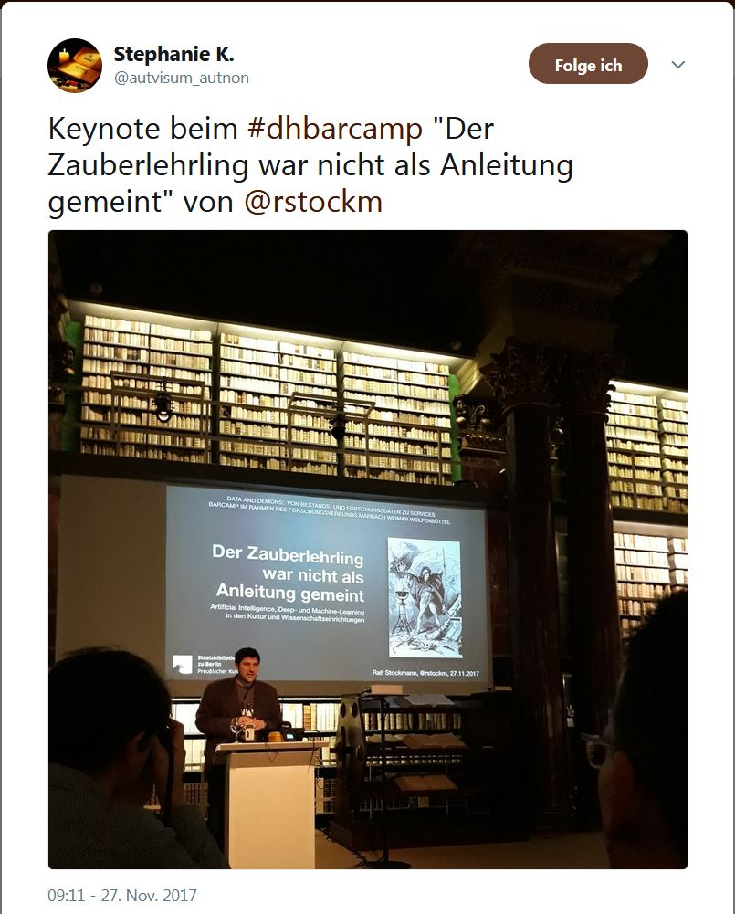

Der Forschungsverbund Marbach Weimar Wolfenbüttel (MWW) empfing diese und 49 andere interessierte Expert/innen ihres Faches vom 27. bis 28. November 2017 zu einem ersten Digital-Humanities-Barcamp an der Herzog August Bibliothek in Wolfenbüttel. Die Ziele waren hoch gesteckt: Es sollten aktuelle Fragestellungen und Probleme der Digital Humanities im Kontext von Kulturerbeinstitutionen und Informatik diskutiert werden. Der Weg einer klassischen Tagung sollte bewusst nicht beschritten werden, um die unterschiedlichen Disziplinen zusammenzubringen. Es musste ein kommunikatives und freies Format gefunden werden – die Wahl fiel auf das offene Tagungsformat “Barcamp”.
Während 2017 bereits das zehnte BibCamp – ein Barcamp mit bibliothekarischen Schwerpunkten – stattfand,1 ist die Ausrichtung eines Barcamps im Bereich der Digital Humanities und der Geisteswissenschaften bisher eher ungewöhnlich. Allerdings verbreitet sich diese im angloamerikanischen Raum schon etablierte Form langsam auch im geisteswissenschaftlichen Kontext, wie Veranstaltungen wie das histocamp, einem Barcamp für Geschichtsinteressierte, belegen.2
Die wichtigsten Erfolgsfaktoren für ein Gelingen eines DH-Barcamps sind die vielfältige Zusammensetzung der Teilnehmer/innen, ein Kommunikationskonzept, die Räumlichkeiten und äußeren Bedingungen, eine offene Einstellung zu möglichen Ergebnissen sowie Teilnehmer/innen, die sich auf ein solch ungewöhnliches Vorhaben einlassen.3
Die Herzog August Bibliothek als Veranstaltungsort verfügt über eigene Tagungsräume und personelle Ressourcen für die Organisation von wissenschaftlichen Veranstaltungen, jedoch stellte das neue Format trotz der günstigen Voraussetzungen die Organisatoren/innen vor neue Herausforderungen.
Auch für viele Teilnehmer/innen stellte die Veranstaltung “Data and Demons” das erste Barcamp dar, was zu einem erhöhten Kommunikationsaufwand in der Vorbereitung führte. Es bestand Klärungsbedarf in Fragen der Themenvorbereitung, des Ablaufes und der konkreten Durchführung. Irritierend wirkte vor allem der Ablaufplan, der keine konkreten Themen beinhaltet, da diese erst im Rahmen der agilen Agendaentwicklung konkretisiert werden sollen.4 Um über das Format zu informieren wurde ein Beitrag zum Thema “Was ist ein Barcamp” im Blog des Forschungsverbundes MWW publiziert.5
Anstatt eines großen Tagungsraums wurden drei kleinere Seminarräume und die Cafeteria als Veranstaltungsorte ausgewählt, um parallele Sessions zu ermöglichen. Es wurde Moderationsmaterial bereitgestellt und ein Kommunikationskanal über Twitter eingerichtet,6 da eine vorherige Analyse ergab, dass etwa zwei Drittel der Teilnehmer einen Twitteraccount pflegen.7
Damit die Tagungsteilnehmer/innen schon vor dem Beginn des eigentlichen Barcamps thematisch an das Thema “Data and Demons” herangeführt werden konnten, wurde beschlossen eine Keynote und einen Empfang am Abend vor Beginn der Veranstaltung durchzuführen. Die Keynote sollte als Opener dienen, aber auch Vorbehalte gegenüber dem unbekannten Format am kommenden Tag abbauen und ein erstes Kennenlernen der Teilnehmer/innen ermöglichen.
Die Veranstaltung war für jede/n Interessierte/n offen, eine gezielte Ansprache einiger der insgesamt 52 Teilnehmer/innen erfolgte jedoch im Vorfeld, um ein Gleichgewicht der Disziplinen und Stakeholder und eine Vielfalt an akademischen Graden zu erreichen.8 Die Maxime für eine Veranstaltung dieser Art ist: Jede/r ist Experte/in seines/ihres Faches und kann Sessionvorschläge einbringen. Auf diese Weise entstand eine über verschiedene Fachdisziplinen verteilte Teilnehmer/innen/gruppe, die Studenten/innen ebenso umfasste wie Lehrstuhlinhaber/innen oder Bibliothekare/innen. Die Mehrzahl der Teilnehmer/innen war dem Feld Digital Humanities zuzuordnen, wobei diese Gruppe sich weniger aus dem universitären Kontext als vielmehr aus wissenschaftlichen Bibliotheken zusammensetzte. Der überwiegende Teil der Teilnehmer/innen verfügte über mehrjährige DH-Projekterfahrungen und hatte einen geisteswissenschaftlichen Hintergrund.
Während der Vorbereitungen wurde die Entscheidung getroffen einen externen Experten mit der Moderation des Barcamps zu beauftragen. Die Aufgaben des Moderators sind vorab zu klären, in diesem Fall waren es die Einführung, die Moderation der Agendaentwicklung und der Ergebnispräsentation sowie das Zeitmanagement während der Veranstaltung. Die Wahl fiel auf den Hamburger Moderator Moritz Avenarius, der bereits Barcamps zu ähnlichen Themen erfolgreich moderiert hat.9
Das Barcamp wurde auch selbst zum Forschungsgegenstand: Der Virtuelle Forschungsraum des MWW wurde erstmals eingesetzt, um den Bedarf an digitaler Infrastruktur für die Durchführung eines Barcamps zu untersuchen. Er diente als zentraler Einstieg, um Informationen zur Veranstaltung für die Teilnehmer/innen und Interessierten in einem öffentlichen Bereich zu präsentieren.10 Eine vorherige Analyse ergab, wie schon gesagt, dass etwa zwei Drittel der Teilnehmer/innen aktiv einen Twitteraccount pflegen. Um auch die anderen Teilnehmer/innen über die Twitter-Aktivitäten zu informieren, wurden die Timelines im Virtuellen Forschungsraum angezeigt.
Der private Bereich des Virtuellen Forschungsraums bietet die Möglichkeit, Etherpads anzulegen und zu nutzen, um Sessionvorschläge im Vorfeld und während der Veranstaltung mitzuteilen, sowie Ergebnisse und Diskussionen festzuhalten. Eine Teilnehmer/innen/liste und die Möglichkeit, sich direkt mit anderen Teilnehmer/innen auszutauschen, waren weitere Angebote im privaten Bereich des Virtuellen Forschungsraumes.11
Die Pflege des Twitterkanals während der Veranstaltung übernahm eine studentische Hilfskraft. Ziel war es, Nicht-Teilnehmende über die Aktivitäten und Diskussionen zu informieren und einzubinden.12 Zudem wurde Twitter genutzt, um Planänderungen, zeitliche Verschiebungen und zusätzliche Informationen an die Teilnehmer/innen zu adressieren. Auch wenn die bereits erwähnte Analyse ergab, dass nur zwei Drittel der Teilnehmer/innen Twitter aktiv nutzen, konnten diese als Multiplikator/innen während des Veranstaltung dienen, um alle Beteiligten zu erreichen.
Für ein Barcamp wird ein zentraler Raum benötigt, in dem sich die Teilnehmer/innen zusammenfinden und die agile Planung der Veranstaltung durchführen können. Je nach Menge der Sessionvorschläge bedarf es weiterer Räume für die parallele Durchführung von Sessions.
In Wolfenbüttel waren drei Seminarräume vorhanden. Zusätzlich erwies sich die Nutzung der Cafeteria als Ort für kleinere Gesprächsrunden, die auf sehr spezielle Fragen konzentriert waren, als gewinnbringend. In der Cafeteria wurde später auch das Sessionboard aufgestellt, auf dem Themen der Sessions, die Orte und Uhrzeiten festgehalten waren. So konnte die Hemmschwelle der Teilnahme für regulär arbeitende Wissenschaftler/innen und Bibliothekare/innen zumindest teilweise überwunden werden, da eine Teilnahme für einzelne Sessions möglich war. Da Twitter als ein zentrales Kommunikationsformat genutzt wurde, war das Vorhandensein von WLAN obligatorisch. Moderationsmaterial wurde benötigt, um die Diskussion und die Ergebnisse der Sessions anzuleiten beziehungsweise zu dokumentieren.
Die von Ralf Stockmann (Staatsbibliothek zu Berlin – Preußischer Kulturbesitz) gehaltene Keynote mit dem Titel “Der Zauberlehrling war nicht als Anleitung gemeint. Artificial Intelligence, Deep- und Machine-Learning in den Kultur- und Wissenschaftseinrichtungen” gewährte einen Blick in die Zukunft von wissenschaftlichen Bibliotheken, der angesichts der Potentiale von künstlicher Intelligenz sowohl begeisternd wie beängstigend war.14 Der Kontrast zwischen dem digitalen Thema des Vortrages, verbunden mit dem Einsatz moderner Medien zu der im Hintergrund angestrahlten historischen Büchersammlung des 17. Jahrhunderts, schuf eine ideale Kulisse für die Frage nach der zukünftigen Rolle von Bibliotheken in einer digitalen beziehungsweise sich digitalisierenden Welt. Die sich an den Vortrag anschließenden Diskussionen zeigten bereits, dass dieses Thema sowohl Geisteswissenschaftler/innen als auch Bibliothekare/innen und Informatiker/innen anspricht und auf unterschiedlichen Ebenen beschäftigt. Das Thema der Keynote und die sich daran anschließenden Gespräche waren nicht nur ein guter Einstieg für das Barcamp, sondern brachten Ideen und Vorschläge zu Sessions hervor, die am nächsten Tag aufgegriffen wurden. Die Impulse der Keynote zeigten die Potentiale und die sich daraus entwickelnde Diskussionsdynamik auf, welche durch die oben beschriebene Divergenz von Digtialem und historischem Bestand hervorgebracht wurde.

Das eigentliche Barcamp begann am Morgen des zweiten Tages. Nach einer Begrüßung und Einführung in das Format der Veranstaltung nannte der Moderator die Regeln für das Barcamp. So empfahl er, dass sich im Rahmen der Veranstaltung die Beteiligten duzen, die Sessions wurden als offene Veranstaltungen deklariert und die zentralen Punkte jeder Session sollten auf Kapaplatten (Kunstschaumplatten) festgehalten und später allen Teilnehmer/innen präsentiert werden. Im Anschluss stellten sich alle Teilnehmer/innen kurz vor, wobei sie drei Hashtags angaben, die ihr fachliches Profil umreißen sollten. Anhand dieser Profile gab es zum “Aufwärmen” offene Kommunikationsrunden, in welchen sich jeweils zu zweit und in wechselnden Konstellationen über die eigenen Erwartungen und Wünsche an das Barcamp ausgetauscht wurde. Hier erwies sich die offene und im Raum verteilte Kommunikation als sehr inspirierend, da die Anzahl der Teilnehmer/innen in dem kleinen Raum eine bienenstockartige Atmosphäre schuf. Dieses Vorgehen kreierte eine gute Grundlage für den nächsten Schritt: das Einbringen von Sessionvorschlägen im Rahmen der agilen Planung.
Als Einzelperson oder in kleineren Gruppen wurden die Sessionvorschläge erarbeitet und auf einem Blatt festgehalten. Insgesamt wurden 17 Vorschläge eingebracht. Anschließend wurde jeder Vorschlag durch einen der Einreichenden präsentiert. Nach der Präsentation wurde um eine kurze Einschätzung gebeten, wie viele der Teilnehmer/innen sich für die vorgeschlagene Session interessieren würden. Es entwickelte sich eine intensive Abstimmungsphase, in der auch Sessionvorschläge zusammengelegt und entsprechend der Anzahl der interessierten Teilnehmer/innen auf die unterschiedlichen Räume der Veranstaltungen verteilt wurden. Während für die größeren Sessions Seminarräume verwendet wurden, bot die Cafeteria Raum für kleinere Diskussionsrunden.
Die vorgeschlagenen Sessions zeichneten sich durch eine große Themenvielfalt aus, die methodische ebenso wie theoretische Fragen umfasst, außerdem wurden Sessions zu konkreten Problemen eingereicht.
| Seminarraum Zeughaus | Meißnerhaus 1 | Meißnerhaus 2 | Cafeteria | ||
|---|---|---|---|---|---|
| 10:30-11:45 | Ich liebe Tabellen – ich hasse Tabellen. Swantje Dogunke | Visionen und Dämonen. Constanze Baum | Automatische Erschließung. Christian Scharfe | Ist DH eine Wissenschaft? Torsten Schassan | | |
| 11:30-12:30 | Keine Websites mehr! Daten statt Oberflächen. Fabian Cremer | Was ist eigentlich eine DH-Fragestellung? Benjamin Hübbe | Verhältnis DH / Hermeneutik. Stefan Höppner | Demons sind Freunde. Nils Reichert | | |
| 13:30-14:30 | DH: Dienstleistung, Forschung, eierlegende Wollmilchsau. Timo Steyer | Suchen, aber nach was? Andreas Henrich | Haben alle digitalen Editionen einen gemeinsamen Kern? Torsten Schassan | Standardisierung von FRBR in XML / TEI. Henrike Fricke | | |
| 15:00-16:00 | Schuster bleib bei deinen Leisten! Markus Baumgarten | Zitierbarkeit Digitaler Editionen. Martin de la Iglesia, Uwe Sikora, Franziska Diehr | Was ist eigentlich so schwierig am Teilen/Bereitstellen von Forschungsdaten? Lydia Koglin | | |
Table: Sessionboard mit den vorgeschlagenen Themen.
Einen besonderer Schwerpunkt beim Barcamp betraf das Selbstverständnis aber auch die Fremdwahrnehmung der Digital Humanities. Hier ergaben sich aufgrund des heterogenen Teilnehmerfeldes verschiedene Sichtweisen, aber auch Teilnehmer/innen aus dem Feld der Digital Humanities interpretierten ihre Rolle in multidisziplinären Projekten unterschiedlich. Ein Spannungsverhältnis bestand zum Beispiel in der Frage, inwieweit der Aufbau und die Entwicklung grundlegender Forschungsinfrastrukturkomponenten, der Bereich des Digital Consulting oder die Bereiche der Tool-Anwendung als Forschungsaufgaben deklariert werden können. Daran anknüpfend wurden die möglichen Rollen der DH-Forscher/innen in Projektteams skizziert. Selbstkritisch wurde aber auch von mehreren Beteiligten angemerkt, dass die Digital Humanities zur Vereinfachung von Problemen neigten und sich selbst durch eine anfängliche Unterschätzung der Komplexität von technischen Prozessen unter Zugzwang setzten.
Ein weiteres Themenfeld betraf die Möglichkeit der automatischen Erschließung von historischen Sammlungen. Die Session näherte sich dem Thema auf der Grundlage verschiedener Beispiele und Erschließungsprofile. Dabei wurden vor allem Erfahrungen mit vorhandenen Tools und semiautomatischen Workflows für die Altbestandserschließung ausgetauscht und die zentrale Frage diskutiert, inwieweit eine maschinell gestützte, aber mit Ungenauigkeiten und Fehlern behaftete Erschließung einen alternativen Weg für die Sammlungsforschung darstellt. Ist wirklich jede Information besser als keine?
Als ein verbindendes Element und Kommunikationsinstrument der verschiedenen Fachdisziplinen wurden Tabellen und Listen identifiziert, da sie seit Jahrhunderten Informationen systematisch verwalten und als Grundlage für weitere Schritte, wie zum Beispiel der Entwicklung relationaler Datenbanken, dienen. Die Teilnehmer/innen entwarfen gemeinsame Anforderungen und empfahlen, in Projekten mit verschiedenen Disziplinen früh anhand von Tabellen über Forschungsdaten zu reden und sie als ein niedrigschwelliges Kommunikationsinstrument in multidisziplinären Forschungsgruppen zu nutzen.
Nach den Sessions kamen alle Teilnehmer/innen zusammen und präsentierten den Verlauf und die erzielten Ergebnisse der veranstalteten Sessions. Es entstand eine intensive Diskussion mit dem Plenum. Die einzelnen Sessions erzielten ganz unterschiedliche Resultate, die Bandbreite reichte von der Lösung konkreter Probleme, wie zum Beispiel die Erstellung eines Vorschlages für die Umsetzung des FRBR-Modells (Functional Requirements for Bibliographic Records) in XML/TEI, über die Gründung kleinerer Arbeitsgruppen, die nach dem Barcamp weiterhin an den Themen arbeiten und auch publizieren wollen, bis zur Konzeption der Weiterverfolgung eines Sessionthemas in einem eigenen Workshop. Die Ergebnisse des Barcamps waren freilich sehr heterogen, so dass eine gemeinsame Ergebnisdokumentation nicht möglich ist. Vielmehr sollen die geschaffenen Impulse von den Teilnehmer/innen aufgegriffen werden und, wo es sich anbietet, weitergeführt werden. Viele Teilnehmer/innen sahen den großen Gewinn in der individuellen Horizonterweiterung und der Erfahrung, die sie im Rahmen des Barcamps gewonnen hatten.
Alle Teilnehmer/innen waren sich einig, dass sie vom offenen, aktiven und impulsgebenden Format profitiert haben. Das Barcamp bot jedem beziehungsweise jeder Einzelnen eine Plattform für die individuelle Fragestellung. Gerade dieser Raum wurde genutzt, um nicht erneut das eigene Projekt vorzustellen und zu profilieren, sondern um Schwachstellen, konkrete Probleme und auch Themen zu erörtern, die nur schwer auf einer Tagung präsentiert werden können. Dazu gehörten zum Beispiel Fragen nach der Konzeption und Steuerung von DH-Projekten. Des Weiteren eignete sich das Format aber auch dazu, stereotypische Kommunikationsgrenzen einzelner Fachdisziplinen zu überwinden und mit Expert/innen aus anderen Bereichen intensiv zu diskutieren. Gerade die heterogene Zusammensetzung wurde als erfolgsrelaventes Kriterium identifiziert. Aus Sicht der Bibliothek kann festgehalten werden, dass sich Barcamps eignen, um unterschiedliche Akteurinnen und Akteure der Einrichtung zusammenzubringen und im Gegensatz zu bibliothekarischen beziehungsweise wissenschaftlichen Konferenzen stärker Nutzer/innen, Wissenschaftler/innen und bibliothekarische Mitarbeiter/innen in einen Dialog bringen zu können.
Aus Sicht der Veranstalter/innen überwiegen bei weitem die positiven Aspekte, auch wenn einige Entscheidungen im Rückblick anders hätten ausfallen können. Zum einem bedingte die erste Durchführung des Formates eine gewisse Konzentration des Teilnehmer/innen/kreises, in der Durchführung erwies sich aber die trotzdem zustande gekommene Heterogenität als wichtiges Kriterium. Ein gemischtes Teilnehmerfeld schafft durch das Zusammenbringen unterschiedlicher Perspektiven eine kontroverse Diskussionskultur. Bei der Gestaltung der Sessionvorschläge erwiesen sich die Sessions mit konkreten Fragestellungen als die produktivere Form, so dass stärker auf eine Harmonisierung von problem-, methodisch- und theorieorientierten Sessions geachtet werden sollte. Ein geeignetes Mittel wäre die Kategorisierung der Sessions in bestimmte Kommunikationsstrukturen, wie zum Beispiel Impulsvortrag und Diskussion, Streitgespräch oder Expert/inn/entische.
Auf der praktischen Ebene sollten die Tagungsräume keine allzu große räumliche Distanz aufweisen, um das schnelle Wechseln zwischen mehreren Sessions zu ermöglichen. In der Vorbereitung sollte möglichst früh ein Kommunikationskanal zu allen Teilnehmer/innen installiert und gepflegt werden, um Informationen zur Veranstaltung zu verbreiten. Da es sich um ein sehr konzentriertes Format handelt, welches auch hohe Ansprüche an die Teilnehmer/innen stellt, sollte die Dauer der Veranstaltung beachtet werden. Die Zeit für die Vorbereitung eines Barcamps war höher als für eine traditionelle Veranstaltungsform, zum einen griffen etablierte Workflows nicht und zum anderen war der Aufwand an Kommunikation mit den Teilnehmer/innen deutlich höher.
Zusammenfassend liegt der Erfolg eines Barcamps in der Schaffung einer Atmosphäre, die durch ständige Kommunikation, kritische Diskussionen aber auch durch Vernetzung und gegenseitigen Respekt geprägt ist. Klassische Tagungshierarchien zwischen Redner/in und Plenum verschwinden. Gedächtniseinrichtungen können dieses Format nutzen, um unterschiedliche Personenkreise zusammenzubringen und zentrale Fragen zu adressieren. Für die Teilnehmer/innen bietet ein Barcamp ein Forum über Projekt oder die alltägliche Arbeit hinaus und einen perfekten Ort, um neue Ideen oder Konzepte gemeinsam zu besprechen oder sich Rat für Problemlösungen zu suchen.
[https://bibcamp.wordpress.com/](https://bibcamp.wordpress.com/).
[https://www.histocamp.de/](https://www.histocamp.de/).
Cremona, Andrea Ghiglietti, et al. entwickelte Algorithmus in:
BarCamp: Technology Foresight and Statistics for the Future, 2014.
S. 55.
[http://www.mww-forschung.de/fileadmin/user\_upload/\_imported/fileadmin/user\_upload/MWW/Veranstaltungen/Programm\_Barcamp171102.pdf](http://www.mww-forschung.de/fileadmin/user_upload/_imported/fileadmin/user_upload/MWW/Veranstaltungen/Programm_Barcamp171102.pdf).
Forschungsdaten zu Services". Online:
\[Stand: 8.12.2017\].
[https://twitter.com/data\_demons](https://twitter.com/data_demons)
sowie über die Hashtags
[\#mww](https://twitter.com/hashtag/mww?src=hash)
[\#dhbarcamp](https://twitter.com/hashtag/dhbarcamp?src=hash) kann
der Verlauf der Veranstaltung und auch die Reaktion der
Teilnehmer/innen nachvollzogen werden.
Veranstaltung eingeladen worden, während die andere Hälfte durch die
Bekanntgabe der Veranstaltung über Blogs, Twitter und
Veranstaltungshinweise auf den Homepages der beteiligten
Einrichtungen auf das Barcamp aufmerksam wurde.
werden.
[https://youtu.be/fZslqmgA5tM](https://youtu.be/fZslqmgA5tM)
Die Folien können eingesehen werden unter:
https://www.slideshare.net/rstockm/der-zauberlehrling-war-nicht-als-anleitung-gemeint-83960825
Veranstaltungswebsite:↩
Vgl.↩
Hilfreiche weitere Faktoren bietet der von L. Azzimonti, Marzia A.↩
Vgl. das Tagungsprogramm unter:↩
Vgl. Moritz Avenarius: Barcamp “Data and Demons: Von Bestands- UND↩
Über↩
Vgl. dazu auch die Ausführungen im Abschnitt “Kommunikation”.↩
Circa die Hälfte der Teilnehmer/innen war vor Beginn der↩
Ungenutzt blieb ein anonymer digitaler “Kummerkasten”.↩
Auch im Vorfeld konnten Sessionvorschläge über Twitter adressiert↩
Vgl. https://www.google.de/maps/@52.1622099,10.5375103,15z?hl=de&authuser=0↩
Eine Videoaufnahme der Keynote ist zu finden unter:↩